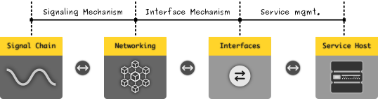
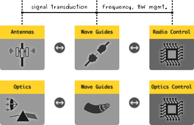
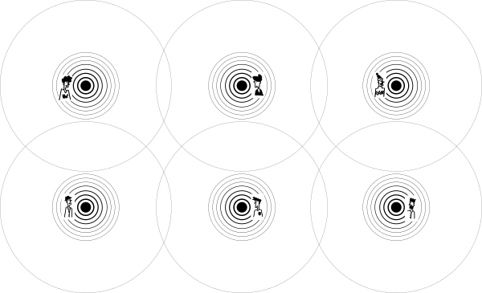
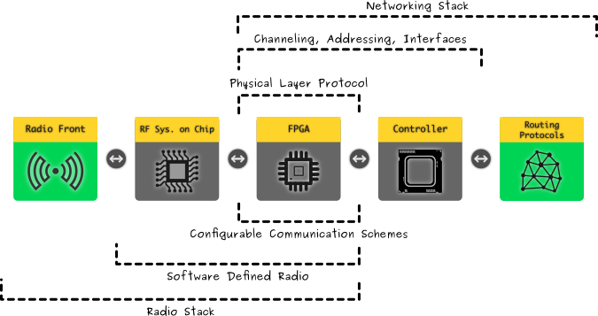
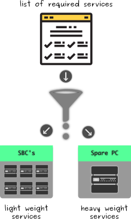

All the information i have posted here are just my perspective of learning, interpretation, understanding
& experience. Mostly they will change according to my change in views and knowledge acquired with possible
critical thinking.
WHY ?
Having a reliable communication, devices that provide necessary functionality need to be integrated
properly with appropriate interfaces between them, collectively forming a stable communication
service. The fundamental necessity is that, there should not be any manual synchronizing necessity,
unless until the situation demands (like in disaster), pushing a asynchronous information
reception and transmission, that supports the natural flow of events. This necessity demands the
requirement of devices, services running in the devices to run continuously without any disruption,
and atleast to have a failsafe regulation loop that assures reliability.
Thus knowing about what are all the devices available in general, how could they be connected, is an important
step in understanding the commisioning of functionlities pertaining to a self manageable communication
service. This crucial step involves not only selecting devices, but also in understanding the mapping
the services and devices (logic, reason, duty, place).
In the previous post, i have provided a overall approach to erect a power system
infrastructure that can be self-managed, which could be easily shared with peers and neighbours openly.
At first it might seem confusing to start constructing the power supply infrastructure without ever knowing
what kind of devices or instruments be used to erect a self manageable communication infrastructure.
But, the power supply architecture can be atleast modeled in paper based on the energy/power budget that
one calcualted from the specifications of the devices to be purchased or in hand. Knowing a rough calculation
of required power, one could able to construct a power supply system with the suitable power generation,
storage and distribution technologies that could supply power more than the required capacity.
Process :
Communication and Information complements both symbiotically. One dominating the other will always leads to
unnecessary problems. Both cannot be separated from each other, and forms the continuum of cooperation
between peers of society. Since we fundamentally, consider communication and information are basic infrastructure,
and actively ignore the commodification of both, which leads to challenging the current business trends & practices.
Thus collecting required devices will drive us to search a level deeper than conventional consumer perspective.
It requires the following essential resources.
atleast two cooperators
information
a common channel
Information is generated and consumed by us or for satisfying any necessity, effectively. Medium can be created by
deploying machines assigned with logical duties to perform. Usually the channel is born out of connecting the
cooperators with each other through either a guided medium or unguided medium. When guided medium is used, more
natural resource is required because of the material requirement. Moreover, such medium, essentially calls for
centralized hub to manage the channel arbitration and maintenance. Even with complex channel management and arbitration
techniques, establishing direct peer to peer connection is still resource intensive.

A General device chaining to constitute a self manageable communication infrastructure
With the availability of radio based communication technology, there is no more technical limitation to
continuously guide the information (signals) between the nodes of the cooperators. However, it adds new
technical requirements to provide the required capacity, to compete the previously provided capacity with
guided mediums. With time, radio based communication (wireless) becomes the significant component of the globally
distributed communication networks. For community networks, this condition is necessary to meet the economic
conditions and p2p production methods.

Interfacing the electrical signals to the physical medium is vital
Essentially, to establish a communication channel, medium is required which is formed by Radio/Optical Frontend,
& its associated processing unit, which is implemented and available as IC packages. To manage the physical connection
and route the information between the nodes, a computing unit that could interface with the radio processing unit
is necessary. It is necessary that the communication medium and the channel must provide bi-directional information
transferring capability, either using dedicated full duplex mechanism or atleast providing a multiplexed mechanism.
Radio based communication seems to offer a better balance between resource utilization, flexibility, construction complexity.
However, this does not limit one to construct and use Free space Optics to directly communicate between the
peers.
It is not a surprise, that optical medium is just a special case of electromagnetic medium, with variation in
used materials, governed physics & engineered mechanisms. RONJA
is the best example to consider optics based communication driven by Free Technology and Community cooperation.
Furthermore, a services hosting computer is mostly required that allows the user to suit their requirement upon
which abstract services can be run that abstract the underlying network infrastructure's complexity & make it effectively
usable.
To have a medium, one could create a dedicated one to one pipe, that enables communication, but
the world with such pipes, between all known peers to their peers would look like a morbid world
filled with pipes. We have exhaustively used such pipes, which we generally called them as
"wires", or "guides" in general. These enables the transfer of information as signals
between nodes connected by the guides. The signals can be either, purely electric or electromagnetic
(radio or optical). Whatever we chose, the purpose is to make a platform that provides a
stable environment where information can be transferred to and fro between nodes owned by peers.
In most cases, the network topology is influenced by the type of medium we chose to communicate.
We shall consider the radio & optical medium (free space), that provides optimal flexibility by firing
the mandation to be tethered as in the case of guided medium. Here again, a centralized infrastructure
is possible to maintain the capacity, coverage of the network & artbitration of the channels -
resembling the hub infrastructures of the wired medium. Alternatively, there is a steady rise in
radio/optical based community networks that provides peer to peer distributed network topology.
Required Modules :
For a radio network, the following modules are essential :
A channel is a logical entity, that is formed between any two given cooperators or parties who desires to
engage themself in communication. Channel can only be formed with the presence of a prior medium. It is a
logical agreement formed between the two nodes leading to a session. This channel will have a information
capacity limited by the nature of the medium. It defines the connections between the peers which
collectively forms the network.
To efficiently manage the formation and maintenance of a channel and the associated resources, in terms
of information capacity such as bandwidth, entropy, session management, error correction, routing the
packets of information from source to destination through peers, ... so on and so on, requires a computational
unit that can effectively process such tasks almost as concurrently as possible. With the development of
miniaturization and silicon wafer technology and radio frequency selection, array configuration, beam steering
techniques, this has not only became entycing to research further, but also poses challenge to deal with
complexity emerged from such technologies.
Required Modules :
The following submodules are required to constitute a information channeling & routing instrument:
Imepedance matching unit
RF to Base band convertor
Radio controller
Microcontroller/DSP/FPGA
It is these interesting mechanisms and fundamental policies that bridge the physical reality of the
selected medium and the logical/virtual abstraction that we deal with the services as users of this
communication platform.
Services are logical duties that are necessary to enable the user to communicate. It mostly abstracts
the complex functionalities which form the physical network infrastructure, and provides a logical
view of the network & interfaces with the peers who collectively form the emergent network through
participation. In a sense, it is these services that hooks the user to participate in the network
which actually forms the network. Eventhough, these are abstract, it completes the overall goal of
community networks. The services must answer Why should i connect to a N/W ?, What incentive
one could enjoy on using the N/W in first place ? It is always the "advantages" that play the scenario.
Required Modules :
A service is a set of logical functions that run on top of a sophisticated operating system, that
enables the user to decide what they need, without ever crossing the borders apart from showing
options and recommendations, which may otherwise leads to violation of communication liberties. This
necessitates, the peers in the network to select software systems like, the firmware, bootloaders,
operating systems, security, software stacks, applications be developed collaboratively & to be transparent.
The following modules are necessary to run the services on top of the available network medium, channel,
& interfaces:
Firmware & Operating System
Addressing & Network Stack
Security & Firewall
P2P Connections & File Sharing
P2P Web Services
P2P applications
Antennas
Antennas are the transduction interface with the physical reality. They are the bridges that helps conduct
information as signals in the form of electromagnetic energy radiating into the space. We believe that
social auditing through distributed sensing will pave the way to regulate and eradicate adverse radation
effects. Antennas form the continuum between the signal feedpoint and the medium (atmosphere). Antennas,
have huge diversity of design and can be varied based on its usage. A wide number of parameters are to be
known that fundamentally determine the antenna design. The following non-exhaustive list of parameters
should be considered before desiging an antenna:
Frequency & Bandwidth
Gain
Power
Loss
Input Impedance
Directivity
Radiation Pattern
Aperture (physical & electrical)
Beamwidth
Polarization
...
For community networks, one of the three simple forms of design can be considered. Typically peers in a
community network would be tied with geographical location which make their radio network planning
more interesting. They have to solve the distance of connection (propagation coverage) between the peers
by choosing the suitable antenna that serves best for the community. Being connected through the
medium is the first and foremost requirement for any communication practice. Usually, we gravitate to the
following three requirements :
Point to Point Link
Establishing a link between two nodes that are geographically distant
requires a point to point connection, with high directivity and gain.
Such reqruirement arises usually when connecting atleast two community
networks grouped in different geographical regions.
An ideal Point to Point link between nodes
A Yagi-Uda or Parabolic dish antennas are suitable for such link. This is a perfect network link
that can be formed between two peers which dedicatedly connects them. The link is mostly reliable
as it does not sense the spatial reception from all possible angles, determined by its aperture size.
Such limitation itself, adds to the design advantage of reducing noise, which reflects in improved
Signal to Noise Ratio(SNR) - better compared with other designs.
Point to Multi-Point Link
Either because of geographical situation or because of community requirements,
some peers would participate together forming a hub that would provide a multi point
link station, which would serve the community or the locality in general.
An ideal Point to Multi-Point link between nodes
A Horn, Sector or Patch antenna are suitable examples for such design. Such antennas are used along
with antenna arrays in conventional wireless base stations with varying number of subscribers
covering a significant nearby location. Usually this is a broadcast (centralized) scenario, nomatter
how decentralized the community it is. But serves it purpose.
Multi-Point to Multi-Point Link
When the community peers manage to individually equip themselves with a self manageable communication
infrastructure, logically they would end up forming a flat network topology. Geographical challenges
are effectively balanced with radio communication link planning using suitable antennas.

An ideal Multi-Point to Multi-Point link between nodes
If the links are formed with basic antenna design, then the propagation is modeled with no directivity
that enables the peers to sense all the nearby peers. With coverage comes the sensitivity towards
noise, relatively decreasing the SNR significantly. This necessitates that the nodes be nearer
to each other to effectively engage in communication.
Waveguides/Transmission Lines
Transmission lines and Waveguides, as their names denote, provides the necessary medium to transfer the signal from
one node to another. Usually, what we consider as wired connections, is just an extension of this transmssion line
into a network. However, the transmission lines usually pose signal loss with distance. In the case of wireless networks,
the transmission lines are used to connect the signal processing system with the Antenna. Depending upon the selection
of communication frequency and bandwidth the choice of transmission line or wave guide changes. Design of transmission
line or a waveguide directly affects the energy guiding ability of the line/guide, described interms of its physical or
geometrical properties.
From a signals point of view, ideally, it must not see any change in medium, when they subject to change from one
to another such as :
from radio electronics to transmission line/waveguide & vv.
from transmission line/waveguide to antenna & vv.
from antenna to atmosphere & vv.
This creates a stricter condition to know about transmission lines and waveguides, so that the losses incurred by
them has to be taken into account, to either circumvented or overcome by different design. The goal is to design
transmission lines and waveguides such that, the signal has to travel a continuum instead of experiencing a "speed
breaker" between the change in medium. The design has to be in such a way that they must transfer as much power
provided to them at the feed point as possible.
Radio Electronics
Radio electronics, constitutes of designing impedance matching circuits, power amplifiers, beam steering - phase
controllers, frequency convertors, oscillators, filters, clock circuits, analog to digital convertors, digital to
analog convertors, etc... The design reflects the architectural requirements of the communication, which utilizes
the mechanisms and tools to arbitrate signal measurement, signal to noise ratio, location based regulation, radiated
power, signal filtering, conversion and processing, channel capacity etc..
Usually the design of a radio system tends to be complex, because of the complex nature of radio frequency band,
and their interpretation. Most of the silicon die manufactureres manufacture chipsets that now contains most of
the required systems required for realizing radio frequency modules which can be connected to suit the required
system design by configuring or programming them in more than one way. The system is becoming more and more
configurable, that provides flexibility in design. Earlier, the design and implementation of radio frequency based
electronics are almost rigid, and the designs are specifically suitable for one particular requirement, even when
we can able to think it dynamically, or even when situation asks for it.
With the availability of Software Defined Radios, Field Programmable Arrays, signal measurement feedback (self)
the design patterns are emerging instead of following a specific hand crafted approach.

Ideal underpinnings between radio modules and networking modules
Routers
Routers form the computational part of the device chain, that constitute the node addressing & network stacking,
interface management, connections, sessions, firewall rules, local and wide area network managmement, identification,
packet filtering, etc.. and other long list of essential functionalities, that abstracts the complex physical
network infrastructure. Nowadays the micro-controllers in the routers are equipped with power vs. performance ratio,
that enables us to use it in portable and battery powered manner. They also tend to nicely integrate with the
existing Radio electronic System on Chips, for better and generic operatability.
Routers are known for generally engaging in Routing functions, which conventionally are implemented by
standard protocols that are based on efficient routing procotols based on some fundamental network architecture theory.
With the rise in community networks and commons based peer production and network emergence requirement, many
communities cooperate and compete to create new algorithms, protocols, test and measure their performance, which
can be chosen by the peer or by the community through common discussion such that a common protocol can be used
to link them easily. Furthermore, these routers acts as access-points for the user devices through which the
services and applications work with.
Service Host
To use the underlying network infrastructure for communication, both the stability and usability need to be confirmed.
Providing services that enables other services and application to run on top of the fundamental services are necessary
and are usually executed on a better machine with better processing power. Since these services are software stacks
that provide diverse set of applications, they need to be orchestrated for computing resources like processor, RAM &
storage. Furthermore, a supervisor service is necessary to provide a common management interface to the node administrator
(the peer) monitor and take decisions upon the self hosted services running in the host.

`SBC's & Spare PC's provide an economic & reliable self hosting
With the advent in Single board computers (SBC), one can reach a balance between the service load (computational power) and
electricity consumption. Thus one cannot load all of the required services into a modern single board computer, atleast
until they reach equivalent performance in computing resources, while still being economic. For pragmatic situations,
we can bifurcate the services to fall into one of the two service types :
light weight services
heavy weight services
If the service is a FOSS project, then the community would have already addressed about the services advantages &
limitations. One shall measure based on the metrics provided and could decide whether it is better to host the service
in a SBC or in a workstation. There are alternative projects that are optimized to run with little computing resources
without compromising much of the features of a full fledged service. All those services that are categorized as
light weight can be run in one or several economic SBC's, and the remaining services could be possibly run in a dedicated
workstation (desktop PC or laptop). This decreases the centre point of failure caused by security flaws, or misconfigurations,
or electric catastrophe.
NOTE:
There is a requirement, that the routing, switching protocols, could also be dynamically chosen based upon the
information about the Weather and Geographical conditions. This presses a huge innovation requirement in the area
of protocol design and network stack design that could dynamically switch protocols according to the information
it has gained by sensing or by sharing information from other nodes and verifying it. These innovations will
greatly help in providing stable and reliable communications even during natural disasters. For instance, presently
there is no flexible technology put in practice for commons, to atleast change the frequency of operation from
one band to another, so that it could enable communication, even when many nodes are damaged or mislocated during
disasters. Already, Amateur Radio operators all over the world are volunteering for disaster communications helping
a great deal in humanitarian operations, and serve for respond, rescue, relief operations, where the conventional
communication infrastructures and networks fail.